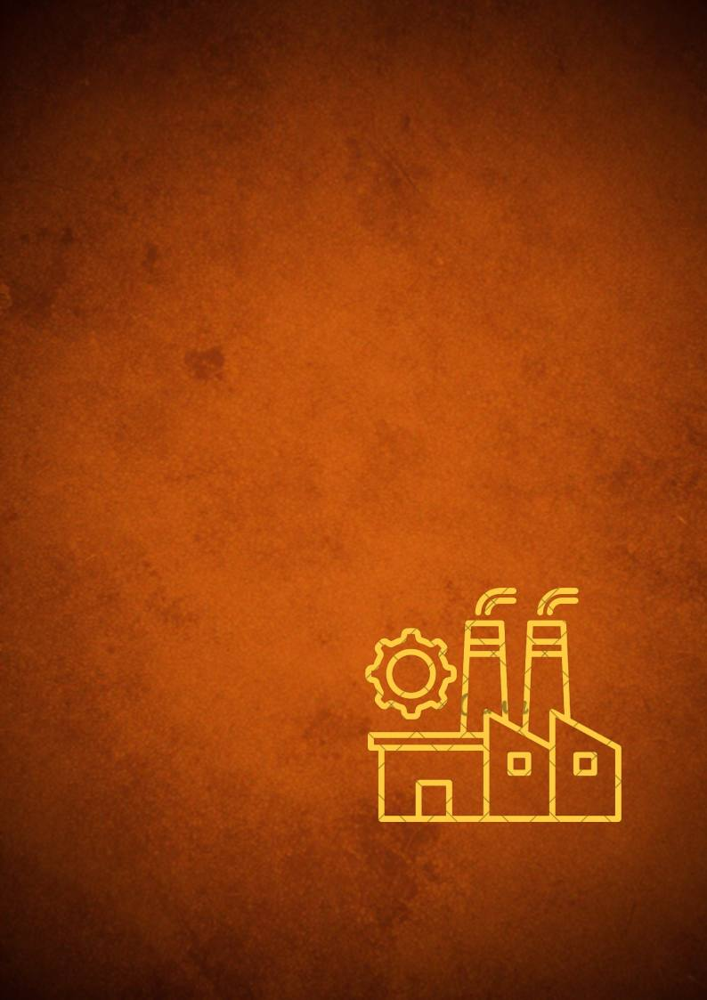

“
É preciso esclarecer
20
— FLÁVIO VIEIRA
TECNÓLOGO EM RADIOLOGIA, MAIS DE 18 ANOS DE ATUAÇÃO NA RADIOLOGIA INDUSTRIAL
P E R S P E C T I V A S D E M E R C A D O · R A D I O L O G I A I N D U S T R I A L
que a Radiologia
vai além das
práticas de
saúde.”
ALÉM DA IMAGEM · CORED-SP · CRTR-SP
20
“A atualização contínua é fundamental para transformar
conhecimento em competência, acompanhar a evolução
tecnológica da Radiologia Industrial e estar preparado para as
novas demandas e oportunidades do mercado.”